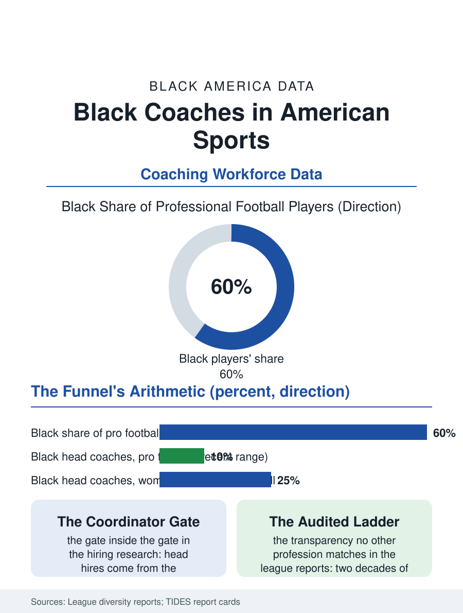

Black Employment
The Audited Ladder: Black Coaches
The deepest candidate pool in American professional life and the most watched funnel: the coaching file counts the chairs season by season. The coaching file.

Black coaches climb the most audited ladder in American sports: the head coaching ranks of the professional and major college leagues, where the candidate pools are majority-Black at the playing level and the hires are not, a funnel the leagues' own diversity reports and the famous interview rule named for a Black coach's father now document season by season. This article reads the coaching file.
The Funnel by the Numbers
The playing workforce's composition sets the file's baseline: the professional football and basketball leagues' players are roughly sixty to seventy percent Black, the major college football and basketball rosters near half, so that the experienced candidate pool for coaching, drawn overwhelmingly from former players and career assistants, is the most Black talent reservoir in any profession in this atlas. The head coaching counts then read as the funnel's output: the professional football league's Black head coaches have oscillated in the low single digits of its thirty-two chairs across the modern era, the basketball league's count fuller, at times approaching a third of its benches, the college game's power conferences thinnest of all at the head chair, with the HBCU programs standing as the file's historic counterweight, the Black head coach's traditional employer and the profession's training ground since the segregation era confined both the players and their coaches there. The coordinator and assistant tiers in the league reports run fuller than the head tier, in the funnel's standard shape, with the pipeline positions, the quarterback coaches and offensive coordinators of the football file's internal hierarchy, identified in the research as the true gate, the head hires being drawn from those chairs at rates that make their allocation the whole game.
The Rule and the Interview Room
The football league's interview requirement, adopted in the early two thousands after the discrimination analyses of the head coaching market made the file a legal and public problem, mandates the interview of minority candidates for the head chairs, and its two decades of outcomes are the file's richest policy dataset: the interview counts rose as designed, the hire counts rose and fell with the owners' cycles, and the rule's expansions, to the coordinator chairs and the front offices, and its incentive experiments, the draft compensation for developing minority hires, record a league administering its own funnel in public, a transparency no other profession in this section matches. The college file runs without the rule's equivalent at scale, its searches conducted by the athletic directors and the search firms whose candidate slates the diversity reports audit after the fact, with the buyout economics, the fired coach's eight-figure severance, raising the hire's perceived risk in the owners' and presidents' calculus in ways the interview data show landing on the unfamiliar candidate, who is disproportionately the Black coordinator whose face the boosters do not know. The women's game file inverts pieces of the pattern: Black women head coaches hold a fuller share of the women's college basketball chairs, the profession's one comparatively integrated head tier, built by the generation the Title IX file's players became.
The Whistle's Weight
The coaching file closes on the profession's meaning in the community's ledger, because the coach is the culture's licensed mentor, the high school coach of the education file being, in thousands of Black neighborhoods, the most consequential adult outside the family in a young athlete's life, a workforce tier the counts rarely celebrate and the memoirs always do. The high school and youth coaching workforce, substantially volunteer and stipended, is the funnel's true base and its unmeasured tier, where the Black coach's presence is the community's own decision rather than any league's report. The professional tier's slow count is therefore not the workforce's whole story but its most legible one, published each season in the leagues' own reports with a candor the file acknowledges as the precondition of its correction. The bureau of this file is the sideline photograph, thirty-two chairs wide. The count in it changes by ones, argued over nationally each time, which is itself the datum: no other hiring decision in American life is watched like this one, because no other profession's funnel is so visible, its pool so deep, and its arithmetic so plainly the nation's own, drawn in chalk on the field the whole country watches.
More in Black Employment
The Black Unemployment Rate: The Two-to-One Pattern
Black unemployment runs at roughly twice the White rate — 5.5 percent against 3.3 percent in annual averages — a ratio stable across five decades of federal data. How it is measured and why it persists.
Black Median Weekly Earnings: The 80-Cent Ratio
Black full-time workers earn a median of about $900 a week — roughly 80 cents for every dollar White workers earn. The BLS earnings data by group, gender, and occupation.
Black Labor Force Participation: Working at National Rates
Black labor force participation runs at roughly the national rate — and Black women participate at higher rates than White women. The BLS participation data.
Source: Professional and collegiate league diversity reports; The Institute for Diversity and Ethics in Sport (TIDES) report cards.